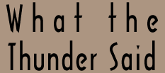

|

Welcome to What the Thunder Said, a site devoted to the works and life of T.S. Eliot. Whether you are a casual reader or a devoted lover, it is our hope that this site can bring you closer to the man and his works. Any questions or suggestions may be sent to the creator, Raymond Camden. The last update was on July 30, 2005. |